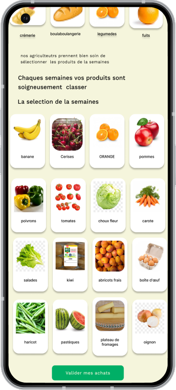
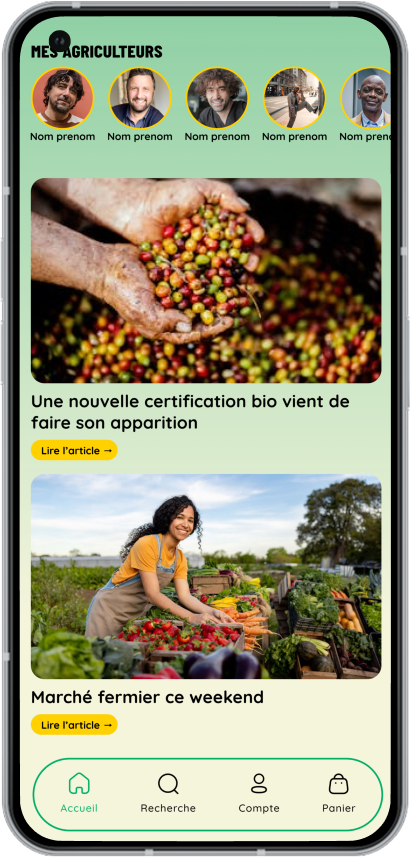
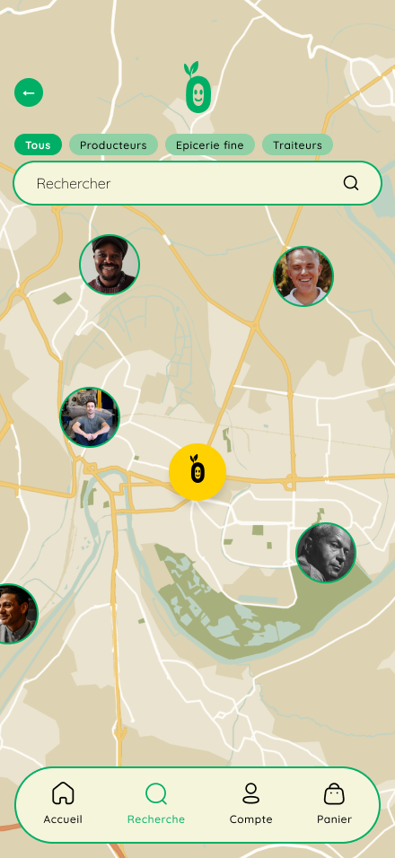

Vision
1
Ramener la Terre dans nos vies, à chaque assiette.
Missions
2
Faire vibrer le local, pour une consommation engagée et stylée.
Valeurs
3
Vrai : Des produits authentiques, sans artifice.
Local : Des circuits courts, pour une économie juste.
Respect : De la terre, des producteurs, de ta santé.
43%
22%
90%
Nos fonctionnalités principales
Une marketplace locale
plate forme d’achat en circuit court


Fil d’actualité
S'informer sur les saisons et suivre le quotidient des producteurs
Carte interactive
Trouver facilement les producteurs les plus proches

Nos témoignages

Sarah L.
"J’ai troqué Uber Eats contre Kékro. Et franchement, j’me régale bien plus"

Yanis M.
"Je redécouvre le goût des vrais produits. Et en plus, je soutiens les producteurs de chez moi."

Reda D.
"Enfin une app qui me donne envie de manger local. Simple, rapide et canon visuellement !"